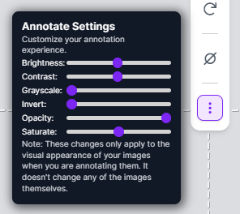
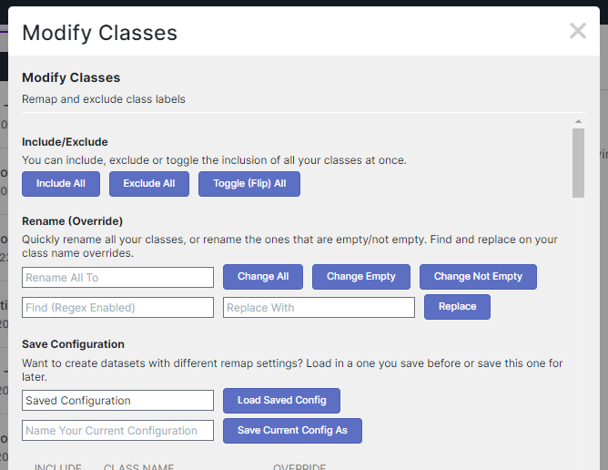

Helpful scripts and additions for Roboflow to make your life just a bit easier. :)
Make the images you annotate easier to see by adjusting contrast, brightness, invert, etc.
Automatically enabled when you go to a annotation page. Look for the three dots at the bottom of the toolbar on the right.
An easy way to bulk include, exclude, rename remapping settings and save them for later use.
Automatically enabled when you go to the "Modify Classes" settings on the Preprocessing section of the "Create a Dataset" page.